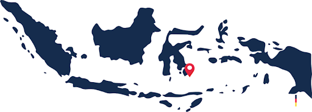

Tentang Kami
Tema besar yang diangkat dalam KKN-PPM UGM Periode 2 (Juli-Agustus) di Desa Waginopo dan Desa Maleko, Kecamatan Wangi-Wangi, Kabupaten Wakatobi, Sulawesi Tenggara ini adalah “Pemberdayaan Masyarakat Desa Waginopo dan Desa Maleko melalui Peningkatan Hasil Pertanian, Pengembangan Agrowisata, Revitalisasi UMKM, dan Perbaikan Kesehatan Masyarakat”
Pengembangan potensi agrowisata, peningkatan kualitas air bersih dan sanitasi lingkungan serta revitalisasi UMKM menjadi perhatian utama kami karena Desa Waginopo dan Maleko menyimpan potensi yang besar di bidang pertanian dan perkebunan dengan beragam jenis komoditas unggul seperti jambu mete, cengkeh, jagung, ubi kayu, dsb. Harapannya, pengembangan potensi agrowisata dan revitalisasi UMKM ini bisa mendorong pertumbuhan perekonomian masyarakat di Desa Maleko dan Desa Waginopo melalui aktivitas pariwisata yang mandiri dan tidak bergantung pada sektor ekowisata bahari. Peningkatan kualitas air bersih dan sanitasi lingkungan pada program KKN-PPM UGM ini ditujukan untuk mendukung pemenuhan standar kesehatan demi meningkatkan kualitas hidup masyarakat setempat.
Secara teknis, melalui kegiatan ini kami akan menjalankan program yang bertujuan untuk peningkatan potensi agrowisata, perbaikan sistem sanitasi air serta revitalisasi UMKM melalui pendampingan secara langsung. Untuk mendorong peningkatan potensi agrowisata, kami akan melakukan sosialisasi dan rekonstruksi manajemen pasca panen terhadap hasil sumber daya pertanian dan peternakan. Kami juga akan mendampingi, memberi penyuluhan serta edukasi terkait pemasangan sistem sanitasi air yang berbasis reverse osmosis dalam skala rumah tangga. Untuk memfasilitasi kreativitas SDM dalam menghasilkan produk khas setempat dalam industri UMKM, kami akan melakukan pendampingan sistem pemasaran menggunakan teknologi digital yang terintegrasi serta melakukan pengadaan alat bantu dalam proses pemasaran produk
